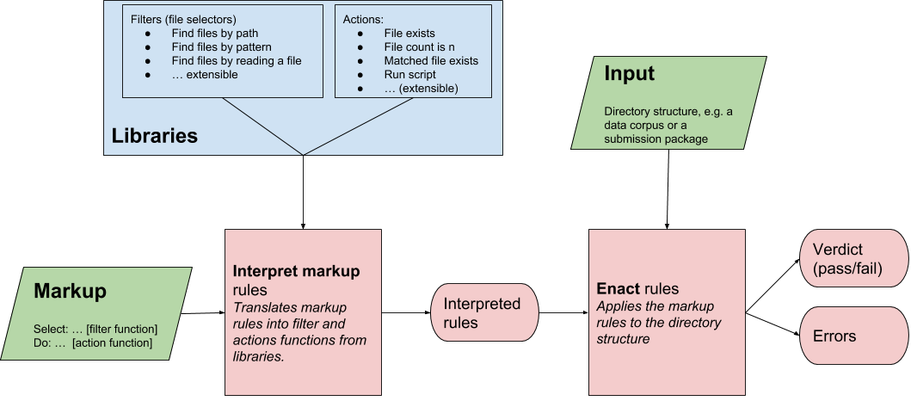
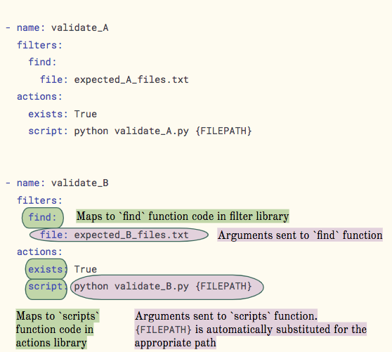

Architecture¶
General Architecture¶
The module has :

- an engine, which applies the rules by interpreting the YAML and pulling from the actions and filters library
- the actions and filters libraries
- a CLI that dispatches calls to the engine
Mapping YAML to code¶
The validation engine maps rules defined in the yaml document by calling the function corresponding to the YAML key. The YAML value is passed as a parameter to the mapped function.
Filters and Actions Namespace¶
The filters core library (resp. actions) core library is located in the filters/
(resp. actions/) directory.
Filters (resp. actions) are available to be used in a YAML spec when they are
imported in filters/__init__.py (resp. actions/__init__.py).